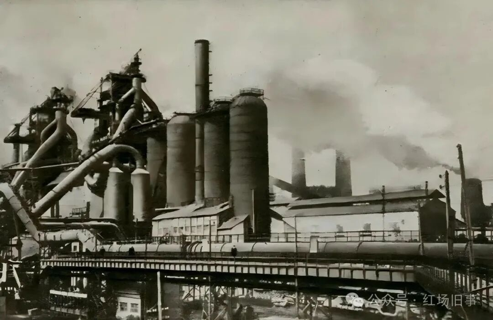
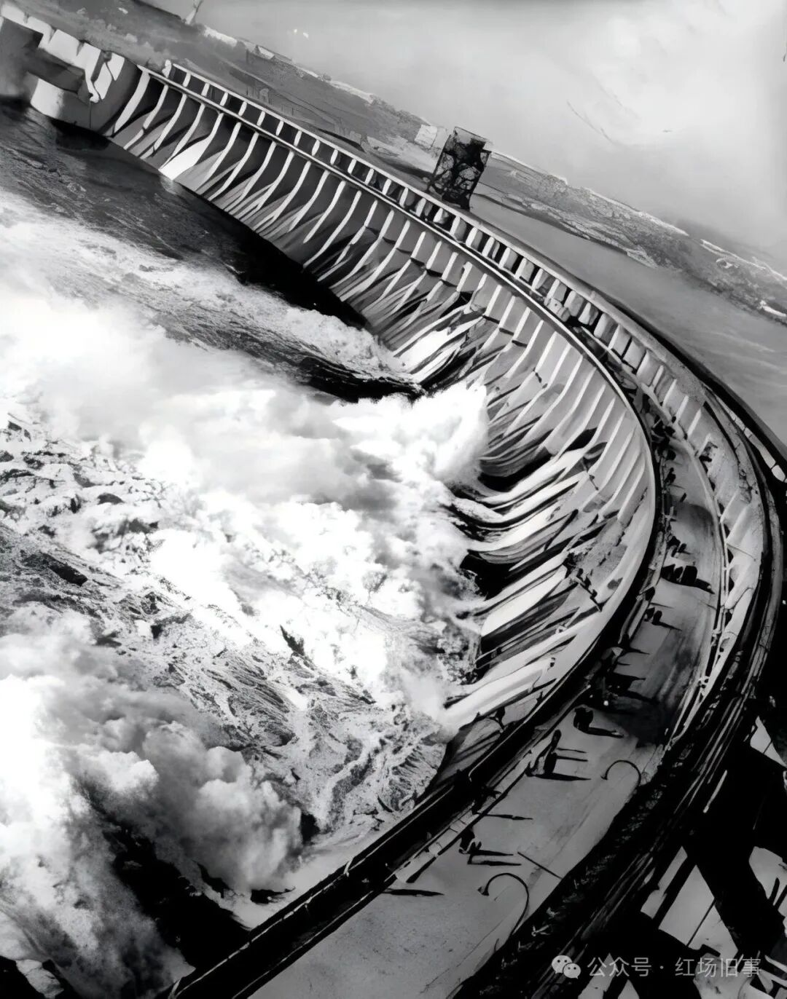
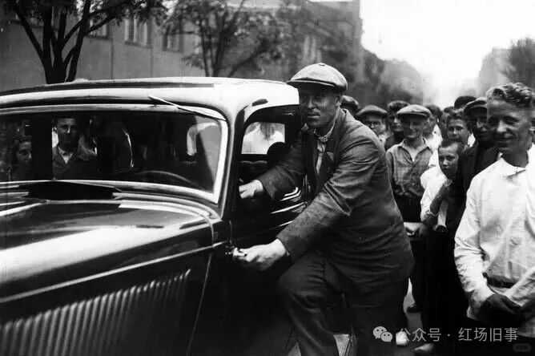
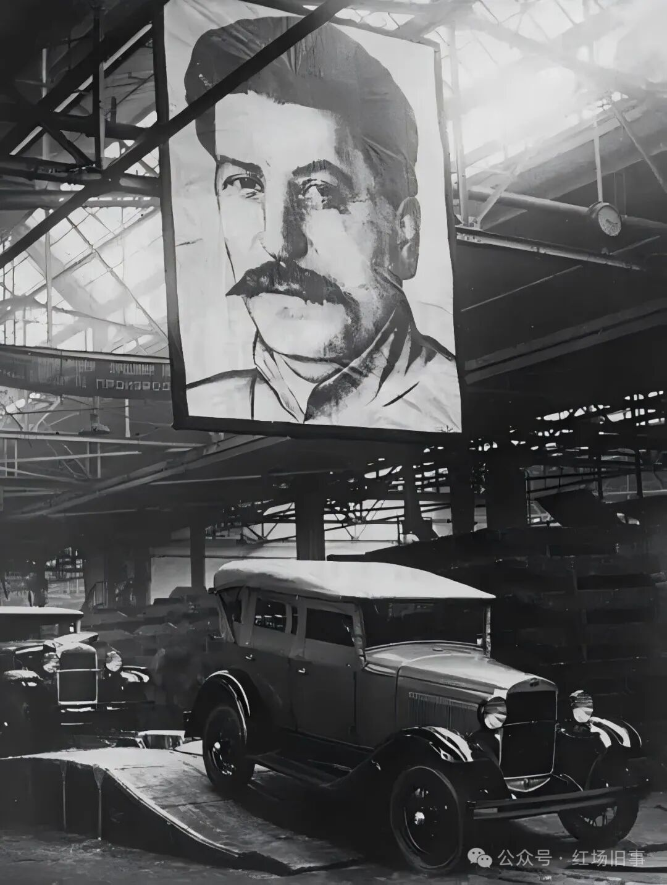

苏联如何仅用十年，就完成欧美数百年的工业化进程？
文字与图片版权归各自权利人所有。 查看公众号原文 ↗
1928年，苏联还是那个被西方嘲讽的“泥足巨人”，工业基础薄弱，机器依赖进口，城市里马车与汽车并行。十年后，1937年，苏联工业总产值跃居欧洲第一、世界第二。

库兹涅茨克钢铁联合企业一期工程
欧洲花了几百年走完的路，苏联为何能用十年跑完？这背后藏着怎么样的秘密？
一、大萧条中的“逆向操作”1929年，资本主义世界陷入大萧条。工厂倒闭，设备闲置，工程师失业。苏联做了一个大胆决定：趁低价大量引进西方技术。苏联与美国福特公司签下1300万美元合同，福特将整套汽车生产线搬到高尔基，还帮苏联培训工程师。斯大林格勒拖拉机厂由美国80多家企业提供设备，在美方团队协助下，仅用十个月建成投产。第聂伯河水电站，当时欧洲最大的水电站。也是由美国工程师帮助修建的。据统计，苏联趁机引进了约10万名美国工程师和技术工人。

第聂伯河水电站1939年建成，位于乌克兰第聂伯河下游
这些设备和技术，苏联没有只当“买办”。每引进一套设备，就组建团队消化图纸、逆向研究，把“鱼”变成“渔”。
二、农业的血与工业的钢钱从哪里来？答案是剪刀差，低价收购农产品出口换汇，补贴工业设备进口。第一个五年计划期间，从农业吸收的资金占工业发展所需资金的三分之一以上。“一五”计划期间，国民收入用于积累的比重为27%，整个工业化时期维持在30%左右。农业集体化为工业化铺平道路，一方面集中粮食保障城市供应，另一方面把农村劳动力“解放”出来进入工厂。代价同样惨重，乌克兰和高加索地区出现饥荒，农民被迫加入合作社的偏“左”做法，成为苏联工业化最沉重的道德包袱。
三、教育与竞赛：人的工业化工业化不能只靠机器，更要靠人。苏联投入巨资普及教育，1930年高校190多所，1940年增至810多所。免费义务教育、免费医疗、低价住房，让工人没有后顾之忧。第二个五年计划期间，“斯达汉诺夫运动”席卷全国。矿工斯达汉诺夫一夜间采煤102吨，超过定额14倍。斯大林评价：这一运动打破了旧的技术定额，超过了先进资本主义国家的劳动生产率。

1936年 莫斯科 斯达汉诺夫
四、奇迹的代价与启示到1937年，苏联建成6000多家大型企业，钢铁产量增长3倍，电力增长6倍，机床产量增长近20倍，机器设备自给率从不足40%提高到90%以上。这些数字在卫国战争中变成活生生的武器：斯大林格勒拖拉机厂转产T-34坦克，最紧张时平均20分钟一辆下线；喀秋莎火箭炮从高尔基汽车厂的军车上发射，敲响了纳粹的丧钟。

高尔基汽车厂生产线
但苏联模式埋下的隐患同样致命：长期偏重重工业导致农业轻工业滞后，高度集中体制压抑经济活力。正如后来普京所言：“苏维埃政权没有使国家繁荣，社会昌盛，人民自由……我们在一条死胡同里发展。”十年赶超百年，靠的是国家意志的集中、历史机遇的把握、人民血汗的付出。正如当时的口号：“工厂的烟雾就是苏维埃的呼吸，没有了工业苏联将无法生存。”那个年代的人相信，今天的牺牲是为了明天的生存。历史没有对错，只有代价与选择。往期精彩内容第10期 解密乌克兰大饥荒：数字背后的谎言与血泪，为苏联埋下民生死结第11期 狂飙十年：苏联凭什么用两个五年计划，从农业国逆袭成工业巨头？第16期 从库尔斯克到柏林：红军踏平欧洲的最后一千里，是用什么铺成的？第23期 军工优先的代价：苏联如何用重工业透支了自己的未来